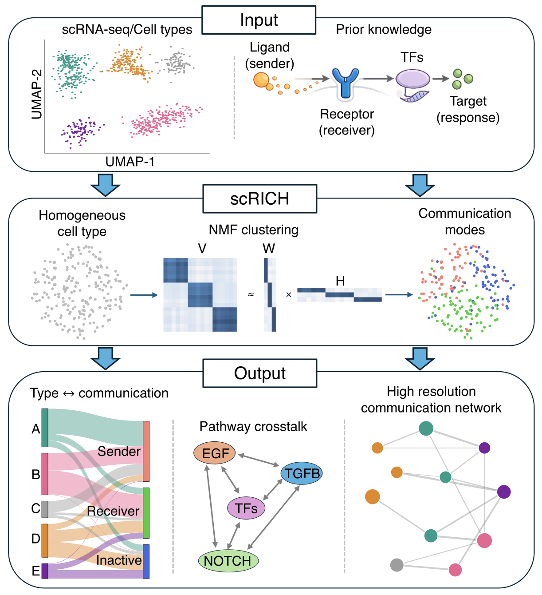
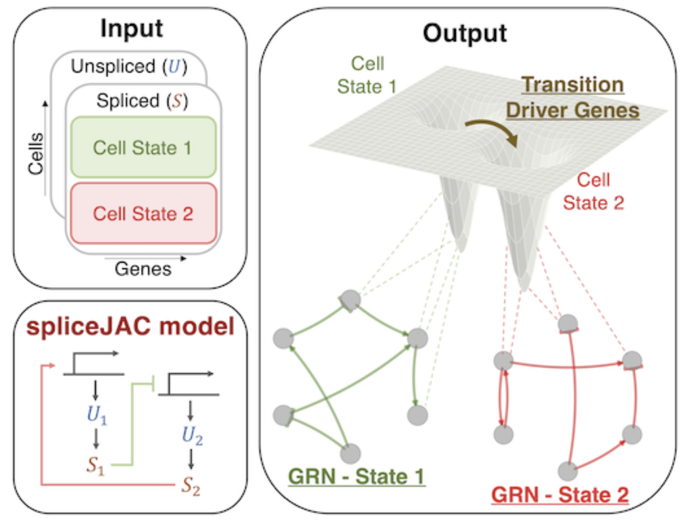

scRICH
scRICH (robust identification of cell-cell communication heterogeneity in single cells) leverages single cell transcriptomics data to quantify cell-cell communication heterogeneity within cell populations. By integrating cell transition and gene regulatory network inference, scRICH identifies emerging patterns of communication along differentiation lineages and in spatial systems.
You can find more information about scRICH in the documentation.
Publication: Federico Bocci, Yunlong Jia, Scott Atwood, Qing Nie, “Robust identification of cell-cell communication heterogeneity in single cells” (2026) Cell systems (in press).
scRICH (robust identification of cell-cell communication heterogeneity in single cells) leverages single cell transcriptomics data to quantify cell-cell communication heterogeneity within cell populations. By integrating cell transition and gene regulatory network inference, scRICH identifies emerging patterns of communication along differentiation lineages and in spatial systems.
You can find more information about scRICH in the documentation.
Publication: Federico Bocci, Yunlong Jia, Scott Atwood, Qing Nie, “Robust identification of cell-cell communication heterogeneity in single cells” (2026) Cell systems (in press).

STT
Spatial transition tensor (STT) is a method that utilizes mRNA splicing and spatial transcriptomes through a multiscale dynamical model to characterize multi-stability in space. By learning a four-dimensional transition tensor and spatial-constrained random walk, STT reconstructs cell-state specific dynamics and spatial state-transitions via both short-time local tensor streamlines between cells and long-time transition paths among attractors. Overall, STT provides a consistent multiscale description of single-cell transcriptome data across multiple spatiotemporal scales.
You can find more information about STT in the documentation.
Publication: Peijie Zhou, Federico Bocci, Tiejun Li, Qing Nie, “Spatial transition tensor of single cells” (2024) Nature Methods 21(6) 1053-1062.
Spatial transition tensor (STT) is a method that utilizes mRNA splicing and spatial transcriptomes through a multiscale dynamical model to characterize multi-stability in space. By learning a four-dimensional transition tensor and spatial-constrained random walk, STT reconstructs cell-state specific dynamics and spatial state-transitions via both short-time local tensor streamlines between cells and long-time transition paths among attractors. Overall, STT provides a consistent multiscale description of single-cell transcriptome data across multiple spatiotemporal scales.
You can find more information about STT in the documentation.
Publication: Peijie Zhou, Federico Bocci, Tiejun Li, Qing Nie, “Spatial transition tensor of single cells” (2024) Nature Methods 21(6) 1053-1062.

spliceJAC
spliceJAC is a python-based toolkit to reconstruct cell state-specific gene regulatory networks (GRN) and predict transition driver genes leading to cell differentiation from single-cell transcriptome data.
You can find more information about spliceJAC in the documentation.
Publication: Federico Bocci, Peijie Zhou, Qing Nie, “spliceJAC: transition genes and state‐specific gene regulation from single‐cell transcriptome data”, (2022) Molecular Systems Biology 18 (11), e11176.
spliceJAC is a python-based toolkit to reconstruct cell state-specific gene regulatory networks (GRN) and predict transition driver genes leading to cell differentiation from single-cell transcriptome data.
You can find more information about spliceJAC in the documentation.
Publication: Federico Bocci, Peijie Zhou, Qing Nie, “spliceJAC: transition genes and state‐specific gene regulation from single‐cell transcriptome data”, (2022) Molecular Systems Biology 18 (11), e11176.
